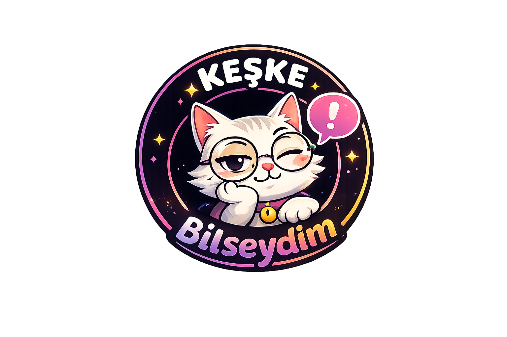

Ev almak, iş değiştirmek, evlenmek, taşınmak... İnsanların sonradan “keşke bilseydim” dediği gerçek deneyimler burada.
Aidat, komşular, kredi masrafları ve sonradan fark edilen detaylar.
Maaş, yönetici, çalışma ortamı ve pişmanlıklar.
Gerçek hayat tecrübeleri, tavsiyeler ve dikkat edilmesi gerekenler.